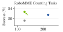
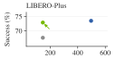
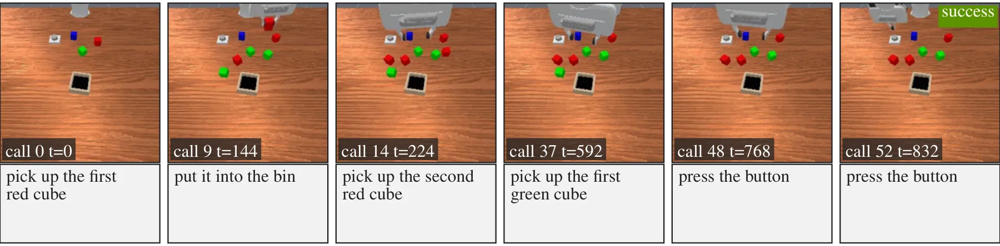
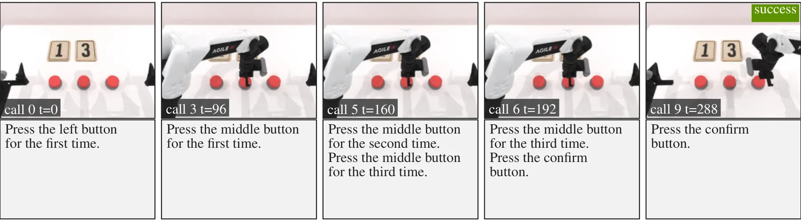
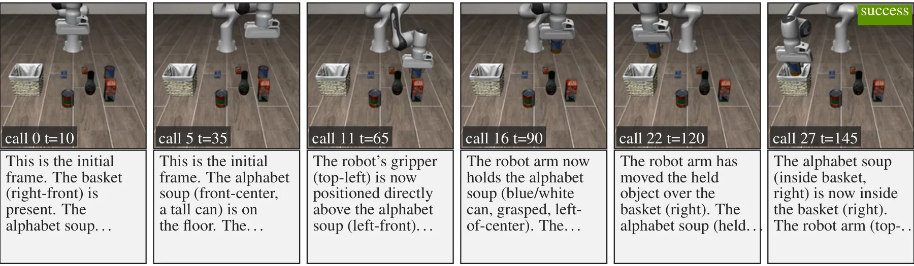
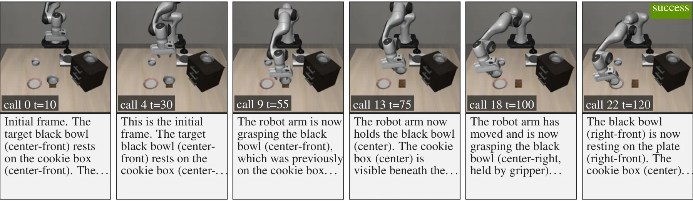
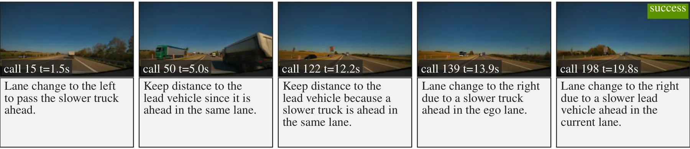

Abstract
Textual reasoning before acting has improved vision-language-action (VLA) models, but at the cost of latency: every action conditioned on the reasoning text must wait for autoregressive decoding. We show that actions do not need to wait for or condition on the generated reasoning to benefit from it, because the reasoning supervision already improves the backbone representation. We introduce TacitVLA, a reasoning VLA whose action expert never attends to the reasoning it generates for the current call. On long-horizon tasks where the reasoning text also serves as episodic memory, it can generate each entry during action execution rather than before acting. We evaluate it in a controlled study on four benchmarks spanning manipulation and autonomous driving, memory and non-memory tasks: RoboMME, RMBench, LIBERO, and PhysicalAI-AV. On all four, TacitVLA matches the performance of its explicit-reasoning counterpart at up to 3.4× lower latency, and matches the latency of the same architecture trained without reasoning at up to +17.1% success. In absolute terms, it surpasses the best previously published results on the RoboMME Counting suite (82.7% vs. 66.8%) and RMBench (77.5% vs. 56.5%), and reaches 72.9% on LIBERO-Plus and a 52.5% scene score on the public split of the PhysicalAI-AV closed-loop driving challenge.
Method
Masking the Reasoning from the Action Expert
A reasoning VLA pairs a vision-language backbone, which generates the reasoning text, with a flow-matching action expert that outputs the action chunk. Explicit Reasoning deploys it as embodied chain-of-thought does: the action expert attends to the reasoning generated for the current call, so every action chunk waits for autoregressive decoding.
TacitVLA is trained on the same sequence with the same loss, prompts, data, and optimizer, and differs only in masking the action expert's attention to the reasoning tokens. The reasoning supervision still trains the backbone whose representation the action expert conditions on. No Reasoning is the same architecture trained without reasoning supervision, so it matches TacitVLA's latency and measures the benefit of that supervision.
At deployment, TacitVLA generates no text on non-memory tasks, where nothing consumes it. On memory tasks, each generated subtask becomes the next entry of a ledger that every later call conditions on. There TacitVLA computes the action first and generates the entry while the robot executes the action chunk.
![(a) The training sequence: the vision-language backbone predicts the reasoning text and the tokenized actions under cross-entropy, and the action expert denoises the action chunk under flow matching. (b) The attention mask: the action chunk attends to the reasoning text only under Explicit Reasoning. (c) Deployment: on non-memory tasks Explicit Reasoning decodes the reasoning before denoising and executing actions while TacitVLA skips it, and on memory tasks TacitVLA decodes the ledger entry during execution.](static/images/method.svg)
Swipe sideways to see the whole figure
Results
Explicit Reasoning's Success at No Reasoning's Latency
On the RoboMME Counting tasks and LIBERO-Plus, TacitVLA matches Explicit Reasoning's success at 1.7× and 3.4× lower latency, and matches No Reasoning's latency at +3.5% and +5.3% success.


Latency
No Reasoning's Latency on Every Benchmark
Explicit Reasoning's action waits for the reasoning text, so its latency per call is the action path plus text generation. TacitVLA's latency is the action path alone, the same as No Reasoning's. On the memory tasks, it generates the ledger entry during execution, and that generation finished within the execution window in every call, taking at most 12% of it.
On the RoboMME counting tasks, TacitVLA's action is ready after 127 ms and Explicit Reasoning's after 220 ms. On RMBench, the two take 169 to 171 ms and 236 to 294 ms. On LIBERO, TacitVLA takes 147 ms per call and Explicit Reasoning 495 ms, 3.4× later, so TacitVLA meets LIBERO's 250 ms execution window and Explicit Reasoning does not. In closed-loop driving, they take 127 ms and 269 ms. All values are means over model calls on one H100.
Swipe sideways to see the whole figure
Benchmarks
Matches Explicit Reasoning on All Four Benchmarks
On each benchmark, the three policies share one architecture and are trained on the same data. RoboMME and RMBench are memory tasks, where each generated subtask becomes the next entry of a ledger of past subtasks. LIBERO (with LIBERO-Plus) and PhysicalAI-AV are non-memory tasks, where it serves the current action only.
| Benchmark | No Reasoning | Explicit Reasoning | TacitVLA |
|---|---|---|---|
| RoboMME, Counting taskssuccess (%) | 79.2 | 81.5 | 82.7 |
| RoboMME, all 16 taskssuccess (%) | 46.5 | 45.8 | 48.1 |
| RMBench, four taskssuccess (%) | 60.4 | 77.0 | 77.5 |
| LIBERO, four suitessuccess (%) | 98.5 | 98.1 | 98.6 |
| LIBERO-Plussuccess (%) | 67.6 | 73.5 | 72.9 |
| PhysicalAI-AV, open loopminADE (m), lower is better | 1.166 | 1.140 | 1.116 |
| PhysicalAI-AV, closed loopscene score (%) | 46.4 | 52.3 | 52.5 |
Success values are means over three evaluation seeds, and closed-loop driving values are means over three rollouts per scene. Both RoboMME rows are policies trained on all 16 tasks.
In absolute terms, TacitVLA surpasses the best previously published results on the RoboMME Counting suite (82.7% vs. 66.8%) and RMBench (77.5% vs. 56.5%), and reaches 72.9% on LIBERO-Plus and a 52.5% scene score on the public split of the PhysicalAI-AV closed-loop driving challenge.
On RMBench Press Button, whose count exists only in the ledger, TacitVLA scores 74.3% against 7.7% for No Reasoning, and its ledger is correct in 99.7% of episodes. Trained on the RoboMME Counting suite alone, TacitVLA reaches 89.5%. That is above the benchmark's human reference of 88.5%, in which people chose each high-level action and an oracle planner executed it.
Rollouts
Episodes with the Text TacitVLA Generates
One successful TacitVLA episode per benchmark, from the paper's appendix. Each frame is stamped with the call index and the simulator step, and the box under it holds the text the backbone generated at that call, verbatim. On the memory tasks, the text is the ledger entry, generated during execution of the action chunk. On LIBERO and driving, where TacitVLA generates no text at deployment, the text was generated after computing each action, so the actions are unchanged.
Swipe each episode sideways to see all of its calls
RoboMME BinFill, front camera, at the calls that add a ledger entry and the last call. Instruction: “put three red cubes and one green cube into the bin, then press the button to stop”

RMBench Press Button, head camera, at the calls that add a ledger entry and the last call. Instruction: “Observe the two numbers on the table. Press the left button the number of times corresponding to the number on the left, and press the middle button the number of times corresponding to the number on the right. Then press the right button once to confirm.”

LIBERO, agent camera, with the opening of the reasoning generated at each call. Instruction: “pick up the alphabet soup and place it in the basket”

LIBERO-Plus, Camera Viewpoints, agent camera under a perturbed viewpoint. Instruction: “pick up the black bowl on the cookie box and place it on the plate”

PhysicalAI-AV closed loop in AlpaSim, front camera, with the chain of causation generated at each call. Instruction: “output the chain-of-thought reasoning of the driving process, then output the future trajectory”

BibTeX
@misc{lu2026tacitvla, title={TacitVLA: Reasoning Vision-Language-Action Models Without Reasoning Latency}, author={Jack Lu and Yurong You and Boyi Li and Yulong Cao and Thomas Tian and Chaowei Xiao and Xiangyu Chen and Wenjie Luo and Boris Ivanovic and Marco Pavone and Yan Wang}, year={2026}}